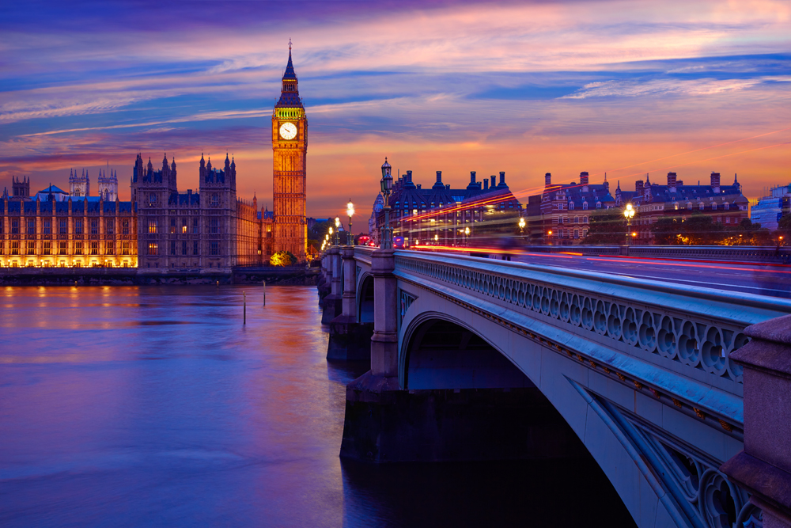
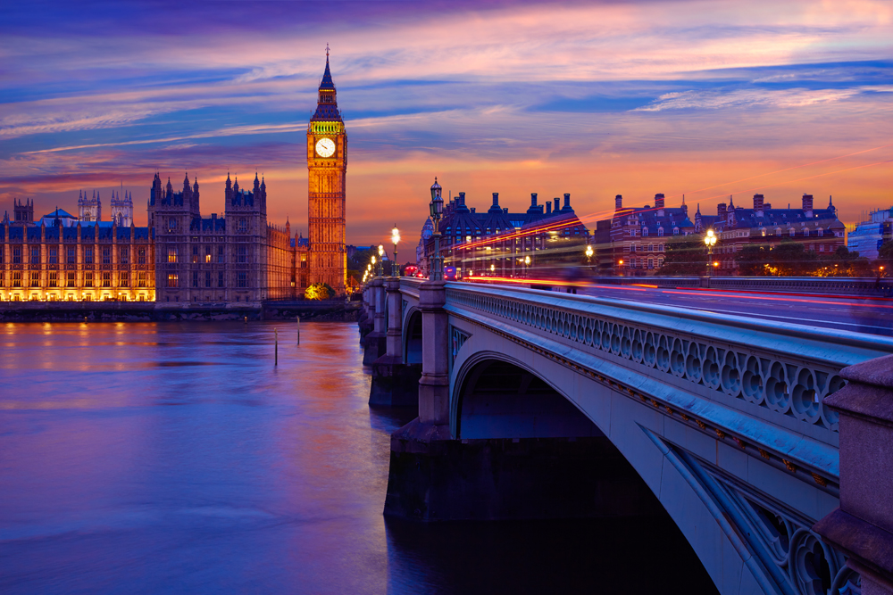

London
London is the capital and largest city of England and the United Kingdom.[8][9] The city stands on the River Thames in the south-east of England, at the head of its 50-mile (80 km) estuary leading to the North Sea. London has been a major settlement for two millennia. Londinium was founded by the Romans.[10] The City of London, London's ancient core and financial centre − an area of just 1.12 square miles (2.9 km2) and colloquially known as the Square Mile − retains boundaries that closely follow its medieval limits.[11][12][13][14][15][note 1] The adjacent City of Westminster has for centuries been the location of much of the national government. Thirty-one additional boroughs north and south of the river also comprise modern London. The London region is governed by the mayor of London and the London Assembly.[16][note 2][17] London is one of the world's most important global cities.[18] It exerts a considerable impact upon the arts, commerce, education, entertainment, fashion, finance, healthcare, media, professional services, research and development, tourism and transportation.[19] It is one of the largest financial centres in the world and in 2019, London had the second highest number of ultra high-net-worth individuals in Europe, after Paris.[20] And in 2020, London had the second-highest number of billionaires of any city in Europe, after Moscow.[21] London's universities form the largest concentration of higher education institutes in Europe,[22] and London is home to highly ranked institutions such as Imperial College London in natural and applied sciences, the London School of Economics in social sciences, and the comprehensive University College London.[23] In 2012, London became the first city to have hosted three modern Summer Olympic Games.[24] London has a diverse range of people and cultures, and more than 300 languages are spoken in the region.[25] Its estimated mid-2018 municipal population (corresponding to Greater London) was roughly 9 million,[5] which made it the third-most populous city in Europe.[26] London accounts for 13.4% of the U.K. population.[27] Greater London Built-up Area is the fourth-most populous in Europe, after Istanbul, Moscow, and Paris, with 9,787,426 inhabitants at the 2011 census.[28][29] The London metropolitan area is the third-most populous in Europe, after Istanbul and the Moscow Metropolitan Area, with 14,040,163 inhabitants in 2016.[note 3][4][30] London contains four World Heritage Sites: the Tower of London; Kew Gardens; the site comprising the Palace of Westminster, Westminster Abbey, and St Margaret's Church; and the historic settlement in Greenwich where the Royal Observatory, Greenwich defines the Prime Meridian (0° longitude) and Greenwich Mean Time.[31] Other landmarks include Buckingham Palace, the London Eye, Piccadilly Circus, St Paul's Cathedral, Tower Bridge, Trafalgar Square and The Shard. London has numerous museums, galleries, libraries and sporting events. These include the British Museum, National Gallery, Natural History Museum, Tate Modern, British Library and West End theatres.[32] The London Underground is the oldest underground railway network in the world.
For more information follow this link.